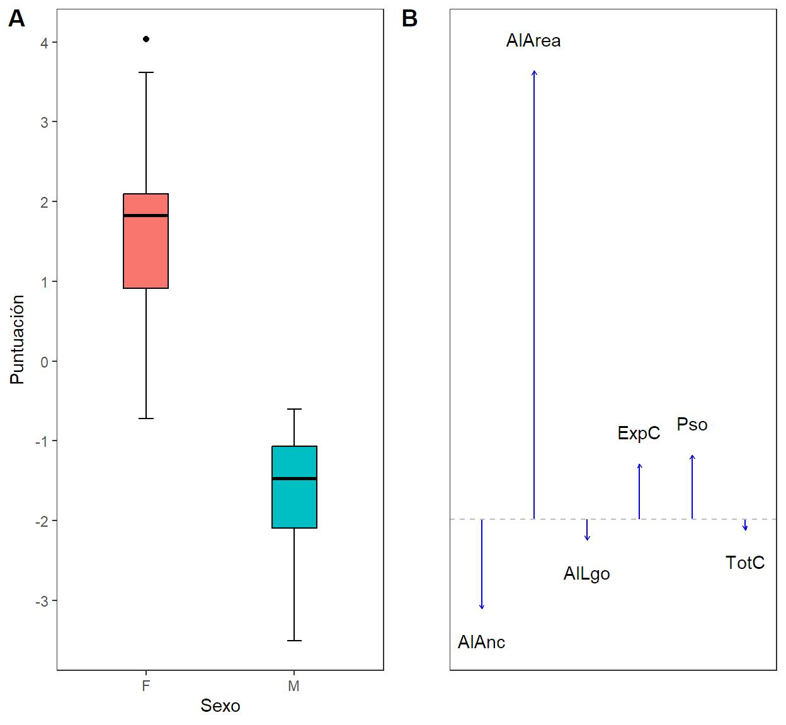
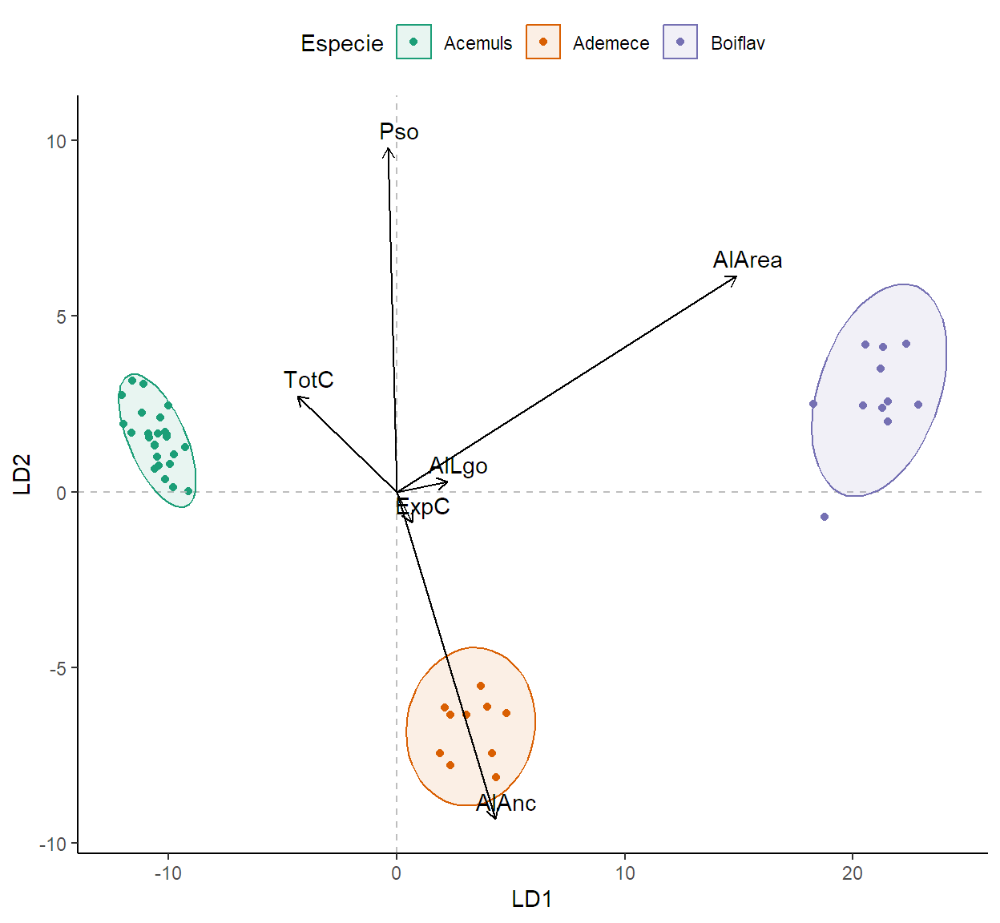
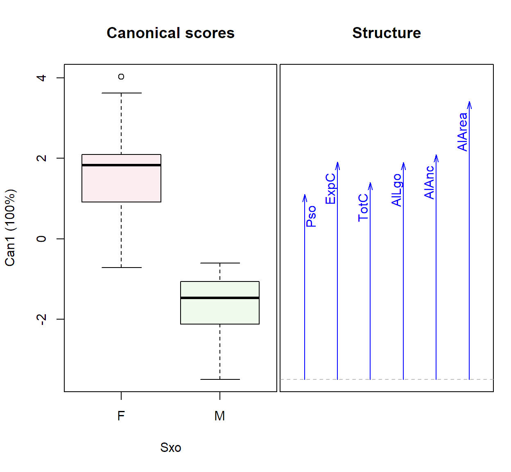
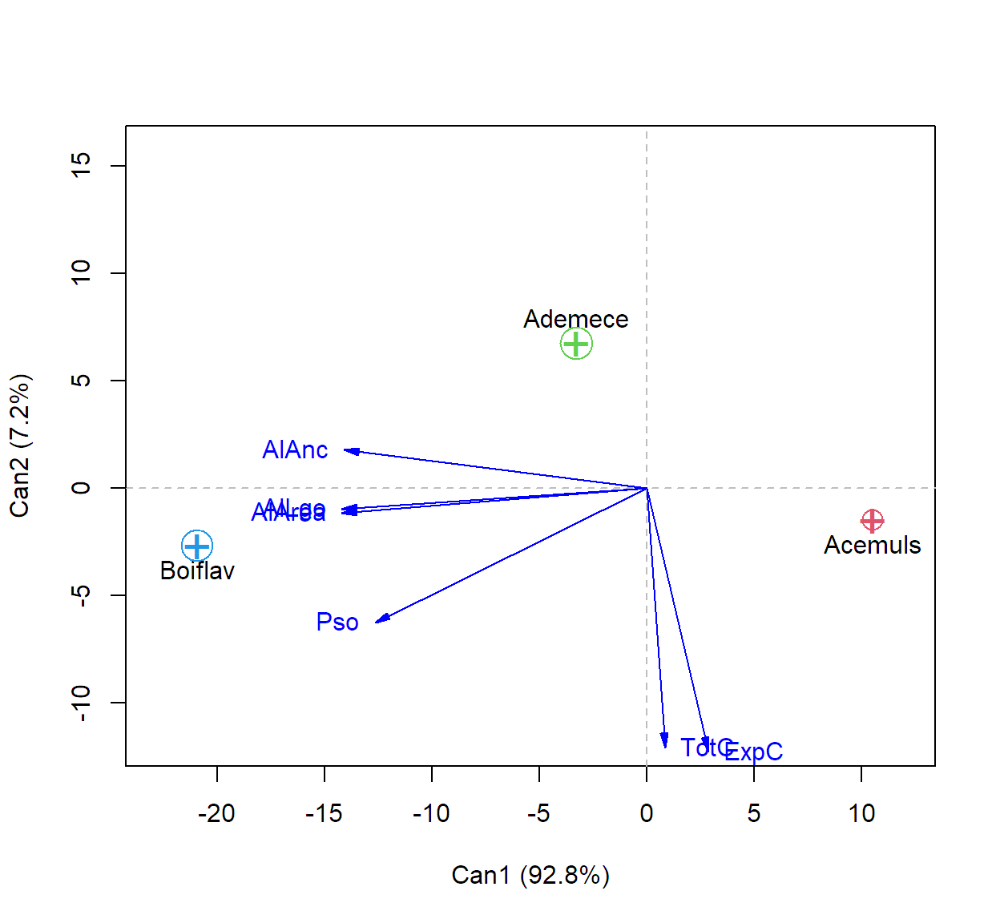

Code
library(readxl)
Colibris <- read_excel(path = "D://Unimagdalena cursos//2021/2021-I//EMV 2021-I Tutoriales//Técnicas MV//Dataset_Guías//Colibris.xlsx")
A<-data.frame(Colibris)El análisis discriminante es un método estadístico multivariante de clasificación supervizada que permite evaluar la pertenencia y/o asignar nuevos individuos dentro de grupos previamente reconocidos o definidos a patir de un modelo matemático.
Para poder aplicar el análisis de importante:
Matriz de datos básica de la Guía: Colibris
Matriz de datos básica para la clase:
Teeth. Contiene información del número total de dientes de 66 mamíferos tanto en la mandíbula superior como en la inferior para cuatro grupos de acuerdo con funciones especializadas en, incisivos, caninos, premolares y molares. Esta información es de utilidad para proporciona una simple base numérica de clasificación de los mamíferos rastreando los cambios evolutivos.
Diatom: Contiene la información de la presencia/ausencia de diferentes especies de diatomeas de la familia Gomphonemataceae de plantas en 193 muestras de piedras recolectadas durante los meses de junio a septiembre de 1998 en diferentes ríos y arroyos franceses por parte del Cemagref y el Centre de Recherche Gabriel Lippman, los cuales posteriormente se analizaron los biofilm.
Texas_Turtle: La matriz de la hoja <<Data.D2>> en el archivo de Excel hacen parte del trabajo realizado por [@brown2020; @brown2020a] quienes tomaron muestras de poblaciones de tortugas de agua dulce en 66 sitios repartidos en diferentes regiones y condados de Texas, EE. UU. La hoja solo incluye las medidas morfologicas de ejemplares de Apalone spinifera emoryi capturados en el condado de Brewster.
Para ejemplificar usaremos la base de datos “Colibris” que contiene diversas mediciones realizadas en 130 colibríes de la Sabana de Bogotá de 4 especies, en donde para cada individuo se midieron las siguientes variables:
Tabla 1.
Descripción de las variables
| Variables | Unidad de medición |
|---|---|
| ID | ID del mamífero. |
| Sxo | Sexo (M:Machos, F:Hembras). |
| Abr | Nombre abreviado de la especie. |
| Especie | Nombre completo de la especie. |
| Pso | Peso de los individuos (g). |
| ExpC | Culmen Expuesto (mm) |
| TotC | Culmen Total (mm) |
| AlLgo | Largo del Ala (mm) |
| AlAnc | Ancho del Ala (mm) |
| AlArea | Área del Ala (mm2) |
| Grupo1 | Especie categorizada (1,2,3 y 4 ) |
| Grupo2 | Especie:Sexo categorizadas (1,2,3,4,5,6,7,8) |
Cargaremos los datos en el ambiente de RStudio y luego cambiemos la naturaleza del objeto usando la función "as.data.frame()" y guardandolos en el objeto A.
library(readxl)
Colibris <- read_excel(path = "D://Unimagdalena cursos//2021/2021-I//EMV 2021-I Tutoriales//Técnicas MV//Dataset_Guías//Colibris.xlsx")
A<-data.frame(Colibris)Para verificar si las variables del perfil en cada grupo se ajustan a la distribución normal p-variante usaremos el test de normalidad de Mardia usando la función "mvn()" ubicada en la librería "MVN".
library(MVN)
mvn(subset(A,Grupo1=="1")[,5:10],mvnTest = "mardia")$multivariateNormality Test Statistic p value Result
1 Mardia Skewness 42.6168724656156 0.906219255376073 YES
2 Mardia Kurtosis -1.62721918187915 0.103690555204364 YES
3 MVN <NA> <NA> YESmvn(subset(A,Grupo1=="2")[,5:10],mvnTest = "mardia")$multivariateNormality Test Statistic p value Result
1 Mardia Skewness 43.329557654361 0.892031335119474 YES
2 Mardia Kurtosis -1.10553762976567 0.268926698432512 YES
3 MVN <NA> <NA> YESmvn(subset(A,Grupo1=="3")[,5:10],mvnTest = "mardia")$multivariateNormality Test Statistic p value Result
1 Mardia Skewness 49.8583181511699 0.70518734092434 YES
2 Mardia Kurtosis -0.544135715474491 0.586348084710675 YES
3 MVN <NA> <NA> YESmvn(subset(A,Grupo1=="4")[,5:10],mvnTest = "mardia")$multivariateNormality Test Statistic p value Result
1 Mardia Skewness 26.852341897809 0.999662481237072 YES
2 Mardia Kurtosis -2.21328788436421 0.0268778043711739 NO
3 MVN <NA> <NA> NOmvn(subset(A,Grupo2=="1")[,5:10],mvnTest = "mardia")$multivariateNormality Test Statistic p value Result
1 Mardia Skewness 44.7200974652013 0.860605312358627 YES
2 Mardia Kurtosis -1.68878989727816 0.0912597005733402 YES
3 MVN <NA> <NA> YESmvn(subset(A,Grupo2=="2")[,5:10],mvnTest = "mardia")$multivariateNormality Test Statistic p value Result
1 Mardia Skewness 30.7802267824439 0.997555799588021 YES
2 Mardia Kurtosis -1.71582730471158 0.0861936550766911 YES
3 MVN <NA> <NA> YESmvn(subset(A,Grupo2=="3")[,5:10],mvnTest = "mardia")$multivariateNormality Test Statistic p value Result
1 Mardia Skewness 78.022142893232 0.027511862829837 NO
2 Mardia Kurtosis -0.489004502559374 0.624838509175287 YES
3 MVN <NA> <NA> NOmvn(subset(A,Grupo2=="4")[,5:10],mvnTest = "mardia")$multivariateNormality Test Statistic p value Result
1 Mardia Skewness 53.0512941687748 0.587199009492306 YES
2 Mardia Kurtosis -1.62875372141619 0.103365165190648 YES
3 MVN <NA> <NA> YESmvn(subset(A,Grupo2=="5")[,5:10],mvnTest = "mardia")$multivariateNormality Test Statistic p value Result
1 Mardia Skewness 64.6234248523869 0.200822670595858 YES
2 Mardia Kurtosis -0.769185246839555 0.441783347293994 YES
3 MVN <NA> <NA> YESmvn(subset(A,Grupo2=="6")[,5:10],mvnTest = "mardia")$multivariateNormality Test Statistic p value Result
1 Mardia Skewness 53.6327975839677 0.564992784544178 YES
2 Mardia Kurtosis -1.45817085528391 0.144793454978019 YES
3 MVN <NA> <NA> YESmvn(subset(A,Grupo2=="7")[,5:10],mvnTest = "mardia")$multivariateNormality Test Statistic p value Result
1 Mardia Skewness 37.1578157382268 0.97538910000349 YES
2 Mardia Kurtosis -1.69829719674749 0.0894516835475543 YES
3 MVN <NA> <NA> YESmvn(subset(A,Grupo2=="8")[,5:10],mvnTest = "mardia")$multivariateNormality Test Statistic p value Result
1 Mardia Skewness 79.9767092005015 0.0194209829084711 NO
2 Mardia Kurtosis -0.516350717778944 0.60560947933185 YES
3 MVN <NA> <NA> NONo posible verificar el ajuste a la distribución normal p-variante de las variables del perfil para la especie Chalybura buffonii buffonii, ya que a pesar de que el test de mardia no reflejo una asimetría significativa, \(\ 𝜒^{2}(56,N=36)=26.85, p>0.05\), las observaciones presentan una variación significativa con respecto al vector del medias, \(\ z=-2.21, p=0.027\). Las hembras de está especie tampoco se ajustan a la distribución normal p-variante ni los machos de la especie Adelomyia melanogenys cervina Para el resto de grupos este supuesto se cumple. (Ver. tabla de reporte de resultados).
Para verificar la homogeneidad en las matrices de varianza - covarianza dado el resultado anterior consideraremos para ejemplificar los valores de la especie Acestrura mulsant por sexo como grupo y las hembras de las tres primeras especies. Lo primero para realizar un análisis discriminante con dos grupos y el segundo con tres. Para ello usaremos la función "boxM()" ubicada en la librería "biotools". Según (Hahs-Vaughn, 2016) valores p menores a 0.001 se consideran significantes para la prueba. Una alternativa no parámetrica para esta prueba seria con la función "betadisper()" ubicada en la líbrería "vegan" . En aquellos casos donde este supuesto no se cumpla, el algoritmo correcto a ejecutar ha de ser un discriminante cuadrático en lugar de un discriminante lineal.
library(biotools)
#Acestrura mulsant por sexo
boxM(data = A[1:49,5:10],grouping = A[1:49,12])
Box's M-test for Homogeneity of Covariance Matrices
data: A[1:49, 5:10]
Chi-Sq (approx.) = 19.028, df = 21, p-value = 0.5833#Hembras de las 3 especies.
boxM(data = A[c(25:49,61:70,84:94),5:10],grouping = A[c(25:49,61:70,84:94),11])
Box's M-test for Homogeneity of Covariance Matrices
data: A[c(25:49, 61:70, 84:94), 5:10]
Chi-Sq (approx.) = 105.14, df = 42, p-value = 2.5e-07El test M de box dejo evidencia que existe homocedasticidad entre las matriz de varianza - covarianza de las variables del perfil por sexos de la especie Acestrura mulsant, \(\ 𝜒^{2}(19)=19.03, p=0.58\). No fue posible con este test en base a la evidencia recolectada validar que la matrices de varianza - covarianza de las hembras de las tres primera especies fueran estadísticamente iguales, $\ 𝜒^{2}(42)=105.14, p<0.001$, pero sí con la prueba no parámetrica, \(F(2,43)=0.359, p=0.7\). En ambos casos procederemos a hacer un análisis discriminante lineal.
La función "lda()" ubicada en la librería "MASS" es útil para ejecutar el análisis discriminante lineal, mientras la que la función "qda()" es útil para ejecutar el discriminante cuadrático. Para ambas funciones la estructura de la línea de código es la misma. De forma general el análisis saca n grupo - 1 funciones discriminantes. En el caso del análisis discriminante cuadrático para dos grupos es posible obtener la función usando los fundamentos del álgebra de matrices.
library(MASS)
DL<-lda(Grupo2~Pso+ExpC+TotC+AlLgo+AlAnc+AlArea, data = A[1:49,])#Discriminante lineal
DLCall:
lda(Grupo2 ~ Pso + ExpC + TotC + AlLgo + AlAnc + AlArea, data = A[1:49,
])
Prior probabilities of groups:
1 2
0.4897959 0.5102041
Group means:
Pso ExpC TotC AlLgo AlAnc AlArea
1 3.5875 16.97083 19.500 43.37083 13.80417 4.874375
2 3.8240 17.97200 20.612 44.78800 14.44400 5.405880
Coefficients of linear discriminants:
LD1
Pso 1.0086760
ExpC 0.8667790
TotC -0.1696751
AlLgo -0.3313001
AlAnc -1.4105951
AlArea 7.0444041Para discriminar entre machos y hembras de la especie Acestrura mulsant usando las variables aréa y ancho del ala y culmen expuesto, lo podemos hacer con la siguiente función discriminante \(\ W=0.84*(ExpC)+4.08*(AlArea)-1.26*(AlAnc)\). Ademas la salida nos muestra que los machos de está especie suelen tener menor dimensión de las alas y culmen expuesto más corto.
DL2<-lda(Grupo1~Pso+ExpC+TotC+AlLgo+AlAnc+AlArea,
data = A[c(25:49,61:70,84:94),])
DL2Call:
lda(Grupo1 ~ Pso + ExpC + TotC + AlLgo + AlAnc + AlArea, data = A[c(25:49,
61:70, 84:94), ])
Prior probabilities of groups:
1 2 3
0.5434783 0.2173913 0.2391304
Group means:
Pso ExpC TotC AlLgo AlAnc AlArea
1 3.824000 17.972 20.61200 44.78800 14.44400 5.40588
2 3.770000 15.280 17.43000 58.16000 21.47000 9.83400
3 7.463636 17.700 20.80909 80.65455 26.92727 17.70364
Coefficients of linear discriminants:
LD1 LD2
Pso -0.03727483 1.96128135
ExpC 0.06769325 -0.17266697
TotC -0.43471222 0.54690647
AlLgo 0.22169448 0.05709618
AlAnc 0.43183224 -1.86383129
AlArea 1.49081396 1.22843308
Proportion of trace:
LD1 LD2
0.9283 0.0717 Responda: ¿Cuál son las funciones de discriminación y que diferencias puede observar entre las hembras.?.
La clasificación de los individuos se puede realizar utilizando el teorema de Bayes, que permite el cálculo de las probabilidades a posteriori a partir de estas probabilidades a priori y de la información muestral contenida en las puntuaciones discriminantes y así evaluar la probabilidad de pertnencia al a cada uno de los grupos para individuo, ó con las puntuaciónes de la función discriminante obtenida, cuyo criterio para clasificar es que si \(\ W_i<0\) el individuo se asigna al grupo 1, de lo contrario si \(\ W_i>0\). Son dos enfoques diferente de evaluar la pertenencia a los grupos que arrojan tasas de error en la clasificación que no necesariamente coinciden. Con la función "predict()" se pueden obtener los suministros para ambos enfoque de clasificación para luego con una tabla de validación cruzada obtener la tasas de error en la clasificación. Modelos con tasa de errores cercanas a ceros se consideran buenos modelos predictivos.
#Predicciones.
P<-predict(DL)
P$x LD1
1 -1.2532038
2 -1.8393431
3 -1.0677434
4 -2.9125954
5 -3.2634473
6 -1.4556262
7 -1.6611573
8 -1.0678436
9 -0.9557383
10 -2.1955478
11 -1.8023942
12 -0.8644086
13 -1.2322965
14 -0.6032149
15 -1.4442463
16 -1.4910220
17 -2.2140410
18 -2.7785348
19 -0.6586079
20 -1.2332581
21 -3.5033544
22 -2.0560275
23 -0.9903948
24 -1.7385594
25 1.4243945
26 2.2792825
27 0.8264827
28 0.3180581
29 2.5854430
30 2.4047784
31 1.4558131
32 -0.7160850
33 1.4782435
34 1.8199033
35 2.6583127
36 0.4688266
37 1.8081336
38 1.9985429
39 2.0939221
40 1.8278503
41 3.6220313
42 1.8878994
43 1.9287595
44 2.0158132
45 -0.7182815
46 4.0377331
47 2.0565725
48 -0.1949211
49 0.9150981Sx<-ifelse(P$x<0,"M","F")
DL.data<- data.frame(A$Sxo[1:49], P$x,Sx)
colnames(DL.data)<-c("Grupo","LD1","Asignado")
head(DL.data) Grupo LD1 Asignado
1 M -1.253204 M
2 M -1.839343 M
3 M -1.067743 M
4 M -2.912595 M
5 M -3.263447 M
6 M -1.455626 M#Tabla de validación de la función
addmargins(table(DL.data$Asignado, DL.data$Grupo,
dnn = c("Clase predicha", "Clase real"))) Clase real
Clase predicha F M Sum
F 22 0 22
M 3 24 27
Sum 25 24 49#Tasa de Acierto
mean(DL.data$Asignado==DL.data$Grupo)*100 [1] 93.87755#Tasa de Error
mean(DL.data$Asignado!=DL.data$Grupo)*100[1] 6.122449#Opciones gráficas.
library(ggplot2)
p1<-ggplot(DL.data, aes(x= Grupo, y=LD1,
fill=Grupo)) +
stat_boxplot(geom = "errorbar",width=0.1)+
geom_boxplot(width=0.3, color="black")+
labs(y="Puntuación",x="Sexo")+
ylim(-4.5,8)+theme_test()+
theme(legend.position="none")+
scale_y_continuous(n.breaks = 10)
variable1<-data.frame(V1=DL$scaling[,1],Var.name=rownames(DL$scaling))
p2<-ggplot(data = variable1,aes(y=V1, x=Var.name))+
geom_segment(aes(y = 0, yend=V1),col="blue",
arrow = arrow(length = unit(0.1,"cm")))+
geom_hline(yintercept = 0,linetype=2,col="gray")+
geom_text(aes(y=ifelse(V1>0,V1+0.5,V1-0.5),
label=Var.name))+
labs(x="", y="")+theme_test()+ylim(-4.5,8)+
theme(axis.text = element_text(color = "white"),
axis.ticks = element_blank())+
scale_y_continuous(n.breaks = 10)
ggpubr::ggarrange(p1,p2,
labels = c("A", "B"),
ncol = 2, nrow = 1)
Responda: ¿existen individuos mal clasificados?, ¿cuál es la tasa de error de la clasificación?, ¿Cuáles son las variables que aportan a la diferenciación y de que forma?
#Predicciones.
Pq<-predict(DL2)
DL2.data<- data.frame(A$Abr[c(25:49,61:70,84:94)],A$Grupo1[c(25:49,61:70,84:94)],Pq$x,Pq$class)
colnames(DL2.data)<-c("Especie","Grupo","LD1","LD2","Asignado")
head(DL2.data) Especie Grupo LD1 LD2 Asignado
25 Acemuls 1 -10.356262 2.113036 1
26 Acemuls 1 -11.077727 3.068913 1
27 Acemuls 1 -10.851606 1.541441 1
28 Acemuls 1 -11.631603 1.677461 1
29 Acemuls 1 -11.585199 3.161746 1
30 Acemuls 1 -9.737211 1.070847 1#Tabla de validación de la función
addmargins(table(DL2.data$Asignado, DL2.data$Grupo,
dnn = c("Clase predicha", "Clase real"))) Clase real
Clase predicha 1 2 3 Sum
1 25 0 0 25
2 0 10 0 10
3 0 0 11 11
Sum 25 10 11 46#Tasa de Acierto
mean(DL2.data$Asignado==DL2.data$Grupo)*100 [1] 100#Tasa de Error
mean(DL2.data$Asignado!=DL2.data$Grupo)*100[1] 0#Opciones gráficas.
variable2<-data.frame(V1=DL2$scaling[,1], V2=DL2$scaling[,2],
Var.name=rownames(DL$scaling))
library(ggplot2)
ggplot(data = DL2.data, aes(x=LD1, y=LD2))+
geom_point(aes(fill=Especie,color=Especie))+
geom_vline(xintercept = 0, linetype=2,color="gray")+
geom_hline(yintercept = 0, linetype=2, color="gray")+
stat_ellipse(aes(fill=Especie,color=Especie),
geom = "polygon",type = "t",alpha=0.1)+
scale_fill_brewer(palette="Dark2")+
scale_color_brewer(palette="Dark2")+
theme_classic()+theme(legend.position="top")+
geom_segment(data = variable2, aes(x = 0, y = 0,
xend=V1*10, yend=V2*5),
col="black",arrow = arrow(length = unit(0.2,"cm")))+
geom_text(data=variable2, mapping = aes(x = V1*10+0.5,y=V2*5+0.5,
label=Var.name))
Antes de ejecutar el algoritmo probaremos si todas las variables consideradas tienen poder discriminate usando la función "greedy.wilks()" ubicada en la librería "klaR". Esta función usa el estadístico Lambda de Wilks como criterio que mide las desviaciones que se producen dentro de cada grupo respecto a las desviaciones totales sin distinción de grupos. Si su valor es pequeño, próximo a 0, la variabilidad total será debida a las diferencias entre grupos y, con ello, las variables con un Lambda de Wilks pequeño serán las que más diferencian, discriminan, a los grupos. Si por el contrario, su valor se aproxima a 1, los grupos estarán mezclados y, por ello, las variables independientes con un Lambda grande carecen de capacidad discriminante.
library(klaR)
greedy.wilks(Grupo2~Pso+ExpC+TotC+AlLgo+AlAnc+AlArea,data = A[1:49,])Formula containing included variables:
Grupo2 ~ AlArea + ExpC + AlAnc
<environment: 0x000002c939805eb0>
Values calculated in each step of the selection procedure:
vars Wilks.lambda F.statistics.overall p.value.overall F.statistics.diff
1 AlArea 0.3771434 77.62104 1.618352e-11 77.621037
2 ExpC 0.2976780 54.26469 7.873644e-13 12.279734
3 AlAnc 0.2791664 38.73139 1.585095e-12 2.983959
p.value.diff
1 1.618352e-11
2 1.016954e-03
3 9.080299e-02Ej de reporte de la salida: es posible distinguir entre machos y hembras de la especie Acestrura mulsant usando solamente tres variables, el aréa del ala, \(\Lambda=0.377\), el culmen expuesto, $\Lambda=0.298$, y el ancho del ala , \(\Lambda=0.27\), al tener un poder discriminate significativo, \(\ F(1,47)=77.62,p<0.05\), \(\ F(1,47)=54.26,p<0.05\), y \(\ F(1,47)=38.73,p<0.05\), respectivamente.
Responda: ¿Qué variables logran distinguir a las hembras de las tres primeras especies?.
Es una análisis en el que la clasificación se hace basado en técnicas de redución de dimensiones (correlación canónica y de componentes principales) para sintetizar la mayor parte de la información contenida en sus datos en pocos ejes de una tabla de datos excesivamente grande con un elevado número de variables, denominado análisis discriminante canónico.
library(candisc)
Acemul<-A[1:49,]
model<-manova(cbind(Pso,ExpC,TotC,AlLgo,AlAnc,AlArea)~Sxo, data=Acemul)
dis_ca<-candisc(model)
summary(dis_ca)
Canonical Discriminant Analysis for Sxo:
CanRsq Eigenvalue Difference Percent Cumulative
1 0.73819 2.8196 100 100
Class means:
[1] 1.6113 -1.6784
std coefficients:
Pso ExpC TotC AlLgo AlAnc AlArea
0.19722 0.56571 -0.14279 -0.30646 -0.55559 1.48710 dis_ca$coeffs.raw Can1
Pso 1.0086760
ExpC 0.8667790
TotC -0.1696751
AlLgo -0.3313001
AlAnc -1.4105951
AlArea 7.0444041dis_ca$structure Can1
Pso 0.6114303
ExpC 0.7175340
TotC 0.6508053
AlLgo 0.7169676
AlAnc 0.7429092
AlArea 0.9185651plot(dis_ca)
Puntuacion_ca<-dis_ca$scores
Puntuacion_ca$grupo.Cl<-as.factor(ifelse(Puntuacion_ca$Can1>0,"F", "M"))
Tb1<-addmargins(table(Puntuacion_ca$Sxo,Puntuacion_ca$grupo.Cl,
dnn = c("Clase real", "Clase predicha")))
Tb1 Clase predicha
Clase real F M Sum
F 22 3 25
M 0 24 24
Sum 22 27 49#Tasa de Acierto
mean(Puntuacion_ca$Sxo==Puntuacion_ca$grupo.Cl)*100 [1] 93.87755#Tasa de Error
mean(Puntuacion_ca$Sxo!=Puntuacion_ca$grupo.Cl)*100[1] 6.122449library(candisc)
Hembras<-A[c(25:49,61:70,84:94),]
model1<-manova(cbind(Pso,ExpC,TotC,AlLgo,AlAnc,AlArea)~Abr, data=Hembras)
dis_ca1<-candisc(model1)
summary(dis_ca1)
Canonical Discriminant Analysis for Abr:
CanRsq Eigenvalue Difference Percent Cumulative
1 0.99444 178.763 164.95 92.8255 92.825
2 0.93251 13.817 164.95 7.1745 100.000
Class means:
Can1 Can2
Acemuls 10.5180 -1.5161
Ademece -3.2851 6.7574
Boiflav -20.9180 -2.6973
std coefficients:
Can1 Can2
Pso 0.011548 -0.607611
ExpC -0.045476 0.115997
TotC 0.415993 -0.523356
AlLgo -0.318187 -0.081947
AlAnc -0.263781 1.138503
AlArea -0.653506 -0.538490plot(dis_ca1)
Puntuacion_ca1<-dis_ca1$scores
Puntuacion_ca1$grupo.Cl<-as.factor(
ifelse(Puntuacion_ca1$Can1>0 & Puntuacion_ca1$Can2<0,"Acemuls", ifelse(Puntuacion_ca1$Can1<0&Puntuacion_ca1$Can2>0,"Ademece","Boiflav")))
Tb2<-addmargins(table(Puntuacion_ca1$Abr,Puntuacion_ca1$grupo.Cl,
dnn = c("Clase real", "Clase predicha")))
Tb2 Clase predicha
Clase real Acemuls Ademece Boiflav Sum
Acemuls 25 0 0 25
Ademece 0 10 0 10
Boiflav 0 1 10 11
Sum 25 11 10 46#Tasa de Acierto
mean(Puntuacion_ca1$Abr==Puntuacion_ca1$grupo.Cl)*100 [1] 97.82609#Tasa de Error
mean(Puntuacion_ca1$Abr!=Puntuacion_ca1$grupo.Cl)*100[1] 2.173913Replique a manera de práctica el análisis discriminate usando la información de otra especie para obtener una función que permita distinguir entre machos y hembras, y responda a: